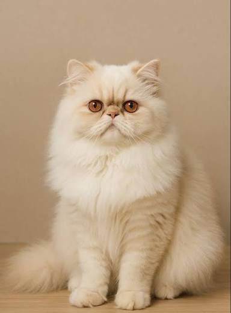
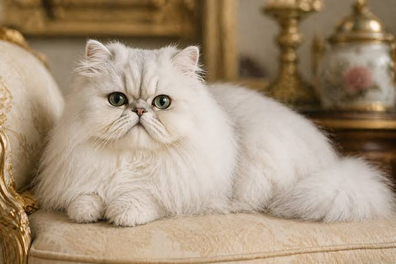
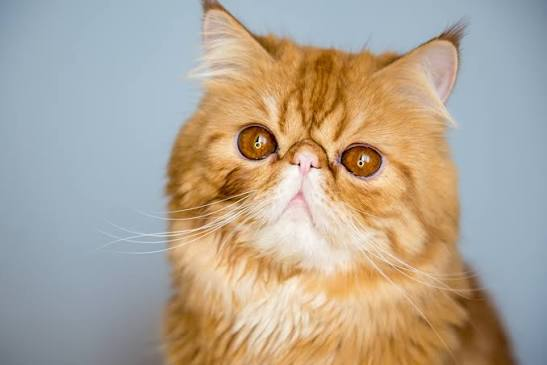
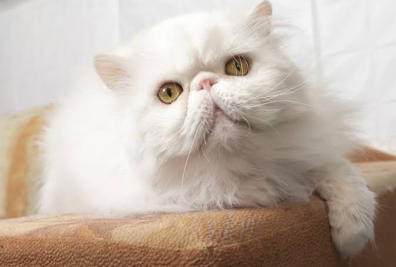
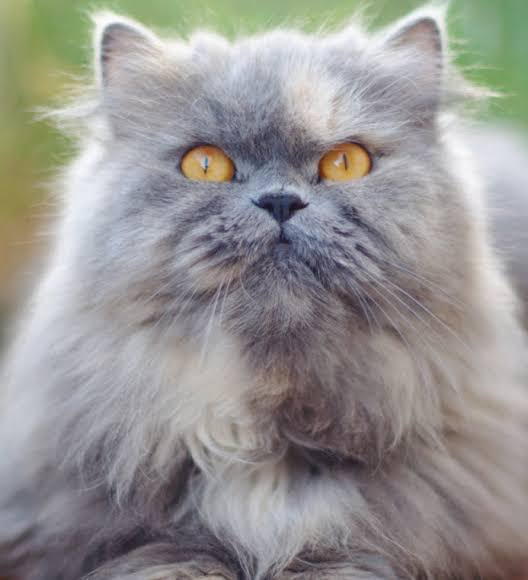
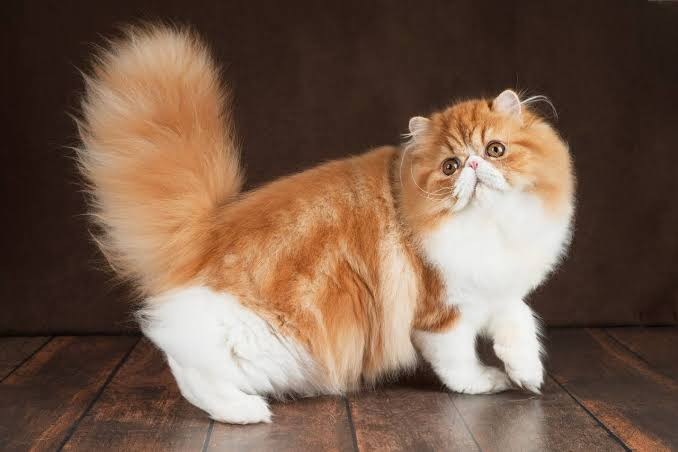

Known for their long luxurious coats, round faces, and calm, affectionate personalities. The Persian cat is known and loved for their very sweet, gentle, calm disposition.
The Persian cat is known and loved for their very sweet, gentle, calm disposition. Persians also enjoy the company of other cats and gentle dogs if they are introduced properly.
Though Persian cats are friendly, they require gentle handling, so avoid roughhousing or grabbing from young children. They get along great with kind, respectful kids, but would rather be stroked and admired than engage in strenuous activities.
Persians love to sprawl out in their favorite spot in the home with good vantage points to keep an eye on the goings-on in the household, be it a plush chair or atop a cat tree. Persians are homebodies. It’s best to keep them indoors to prevent overheating or tangling up their profuse, long coats.
Persian cats are fairly easy to care for in terms of exercise and mental stimulation (a few play sessions a day will do just fine), but their coat requires extensive care and is not for the faint of heart. If not cared for properly, the Persian's coat can form mats, which can be very painful for them.
Persian cats have long, luxurious coats that require frequent grooming to prevent tangles and mats. Regular brushing also removes loose fur and helps keep hair off furniture and clothing.




